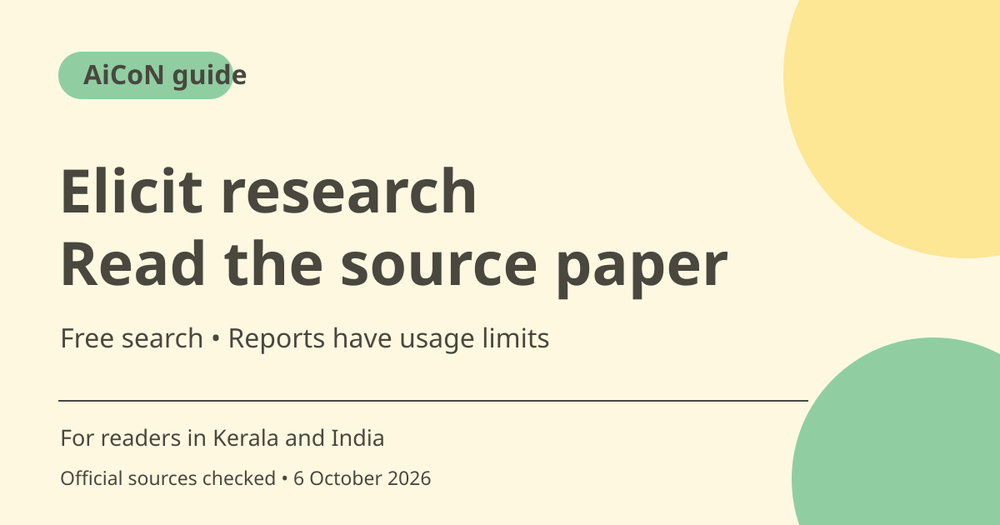

Elicit research search: free tools, sources and limits
Elicit helps search academic papers and organise evidence. Basic advertises unlimited paper search, summaries and chat, but Research Agent and Reports have limited usage. A cited AI answer is still a draft interpretation: open the original paper before relying on it.

What is Elicit?
Elicit searches scientific papers and supports research workflows such as finding papers, comparing evidence and producing reports. Its official help says Find Papers searches a corpus of more than 138 million papers from Semantic Scholar and other sources. That is a provider-stated corpus size, not proof that every paper is relevant or that all full texts are freely available.
Who is it useful for in Kerala and India?
A student, researcher or professional can use it to explore a focused question and organise a reading list. Ask a question with a population, intervention or topic clear enough to search. A broad request like tell me everything about AI will produce a less useful evidence set than a specific research question. Follow your institution's rules on AI-assisted research and writing.
What is free and what is limited?
Basic pricing lists unlimited search, paper summaries and chat with papers, plus source viewing and Zotero import. It separately marks Research Agent and Research Reports as limited usage. Do not translate unlimited search into unlimited reports, systematic reviews or access to every paid feature.
A useful search is not a completed review
Find Papers initially loads the top ten results and can load more in increments up to 100 according to the help guide. That ranking is a starting point, not a declaration that the first papers establish the answer. Review publication date, methods, sample size, setting and relevance. Seek studies with different findings rather than stopping when an AI summary agrees with your expectation.
Read quotes and original sources
AI extraction may mistake an abstract claim for a full-study conclusion or miss a limitation. Open the cited paper and check the passage, study design and outcome definition. Keep the distinction between association and causation. For medical or policy work, use the research as evidence to examine, not as personal advice or a decision made by the assistant.
Annual pricing means an annual charge
The current pricing page shows Pro at US$49 per user per month, billed as US$588 annually. At a clearly labelled rough ~₹96.43/USD conversion estimate, that is about ~₹4,725 per month equivalent and ~₹56,701 annually. Actual conversion, taxes and bank fees can differ. A monthly equivalent is not a promise that you can pay that amount month by month.
How to use it, step by step
- Open elicit.com and review Basic and paid allowances before creating an account.
- Choose Find Papers to begin with a focused research question, as recommended in the official workflow guide.
- Read the returned summary and table of papers. Check titles, dates and relevance rather than treating the first result as the answer.
- Use available columns and filters to compare the papers. Add more results when useful, within workflow limits.
- Open relevant original papers and verify claims against methods, results and limitations. Keep source references in your own notes.
- If using Research Reports or Agent, check the remaining allowance first. Review generated references, quotes and reasoning after the result completes.
- Before paying for Pro, confirm the annual total, seat count, renewal and exact workflow limits. Use your institution's existing access to obtain papers where applicable.
Cost, eligibility and limits
| Basic | ₹0. Pricing advertises unlimited paper search, summaries and paper chat; Reports and Agent have limited usage. |
|---|---|
| Pro reference | US$49 per user/month, billed as US$588 annually. Rough estimate at ~₹96.43/USD: ~₹4,725 monthly equivalent, ~₹56,701 annual charge. Not a local checkout or live FX quote. |
| Access limits | A searchable record does not guarantee free full-text access to every paper. Do not assume a paywall is removed. |
| Research limits | AI summaries require source checking. A quick search or report is not automatically a rigorous systematic review. |
Frequently asked questions
Are reports unlimited on Basic?
No. Pricing explicitly marks Research Reports and Research Agent as limited usage.
Does a citation mean the AI answer is correct?
No. Open the original paper and confirm the claim and limitations.
Is Pro ~₹4,725 charged monthly?
That is a rough monthly equivalent of the checked annual-billing price, not a month-by-month payment promise.
Official sources
Checked 6 October 2026. Features and prices can change. This is a guide, not a personal product test.